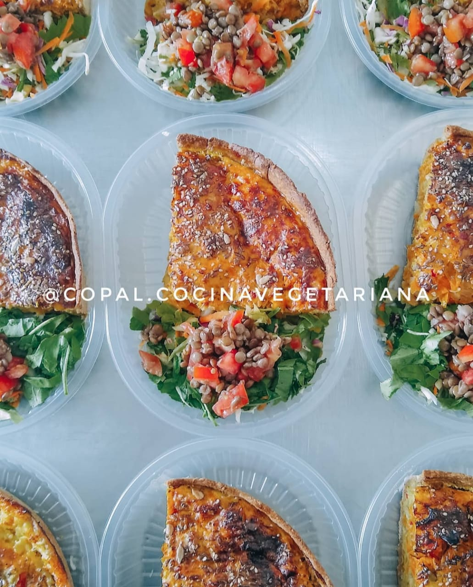

Kitchari, una especiada mezcla de arroz yamani y porotos mung. Esta comida completa es fácil de digerir, otorga fuerza y vitalidad y nutre todos los tejidos del cuerpo.
SuperBurguer Copal, pancito de harinas integrales, medallón casero de legumbres o cereales con mayonesa vegana, lechuga, tomate y acompañada de papas al horno.

Tarta Mix Vegetales, masa casera integral con semillas, rellena de verduras de estación y ricota.